Ticket submitted by sandmanfan (Discord) · 2026-06-12 · levels 1, 1b, 2, 2a, 3, 3c, 3d · fixes authored autonomously by Claude (Fable 5) via Claude Code · live demo: exentt.com/jn-engine · previous tickets: #1 · #2 · #3
The fourth community ticket ranges across Retroville, the school (level2a), the Egypt/Retroland park (level3, 3c, 3d) and Jimmy's lab (level1b). Fifteen reports, and — exactly as sandmanfan predicted at the close of ticket #3 — most collapse into a handful of engine rules, not fifteen one-off patches. The headline is a sequel to the previous ticket's unit bug: the rotation the loader stores was the right magnitude but the wrong sign. Ticket #3 derived the sign from the Z-mirror alone and validated it against rotationally-symmetric props; this ticket's mummy-tomb door and pirate ship — both asymmetric — proved the sign was inverted and pinned the correct one against fixed level geometry. Two more class rules (a never-read OMT shape binding, and "the authored sprite is the visual") cleared seven further reports between them.
| # | level | entity | class / tag | cat. | report |
|---|---|---|---|---|---|
| 1 | level1 | — | Blocks_Out | MIS | the model BoxsOut is now gone |
| 2 | level1b | 3PHO | PHONE1 | ORI | both phone booths are clipping into the wall |
| 3 | level2 | 3KIT | C3DKITTY | GFX | missing/invisible cat model next to the 3NEU sprite |
| 4 | level2 | 3FLA | C3DFIRESTRATO | MIS | missing flag model |
| 5 | level2a | 3TRE | C3DTREE | MIS | 3TRE entities should be cones |
| 6 | level2a | 3SCD | fowlroom | PLC | not aligned in the doorway, texture not displayed properly |
| 7 | level2a | 3OMT | bench06 | MIS | school desks are fans |
| 8 | level3 | 3SCD | C3DSCHOOLDOOR | TEX | retroland entrance/exit doors' textures are upside down |
| 9 | level3 | 3SWN | mummydoor | PLC | mummy door not aligned in doorway |
| 10 | level3 | 3OMT | rockship | MIS | should be the rocketship instead of fan |
| 11 | level3d | 3OCT | C3DOCTAPUKE | MIS | missing texture |
| 12 | level3d | 3OMT | C3DOMTOBJ | MIS | missing arch sign |
| 13 | level3d | 3PIR | C3DPIRATE | ORI | rotation off, not aligned with top beam |
| 14 | level3c | 3TAR | C3DMOVINGTARGET | TEX | texture should be s-star |
| 15 | level3c | 3TAR | C3DMOVINGTARGET | TEX | texture should be martian |
MIS = wrong/missing model · TEX = wrong/missing texture · GFX = rendering artifact · ORI = wrong orientation · PLC = wrong placement. Items 9, 13 (and the alignment half of 6) share the rotation-sign root cause; 7, 10, 12 share the OMT-shape binding; 5, 14, 15 share "the authored sprite is the visual."
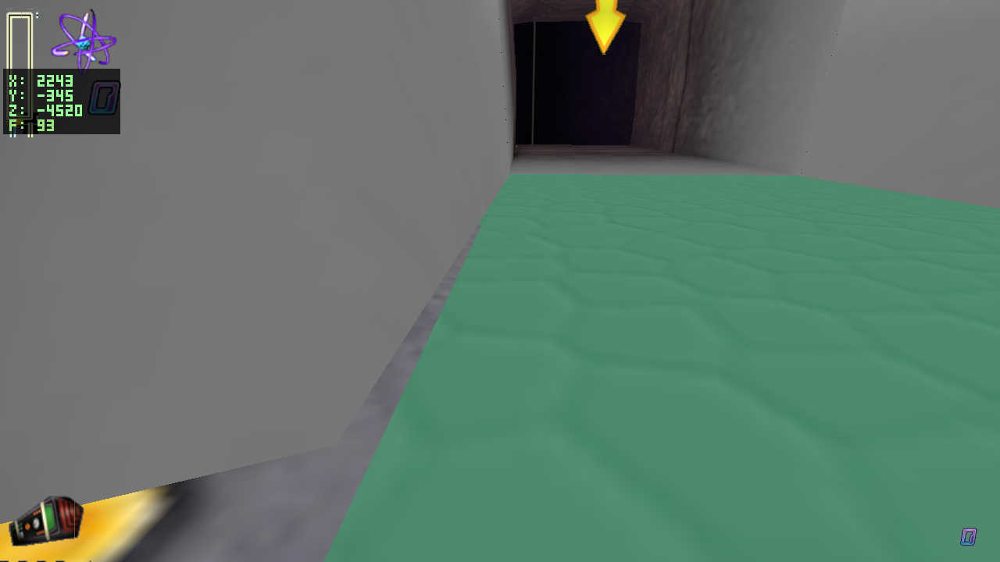
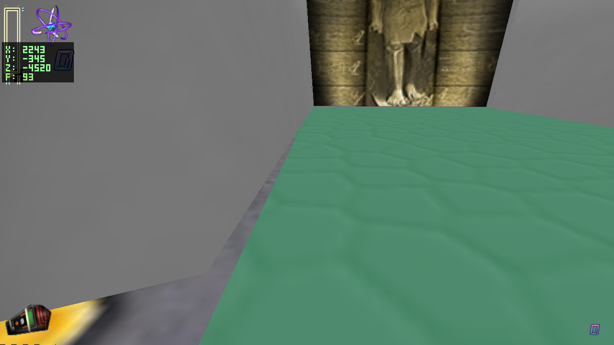
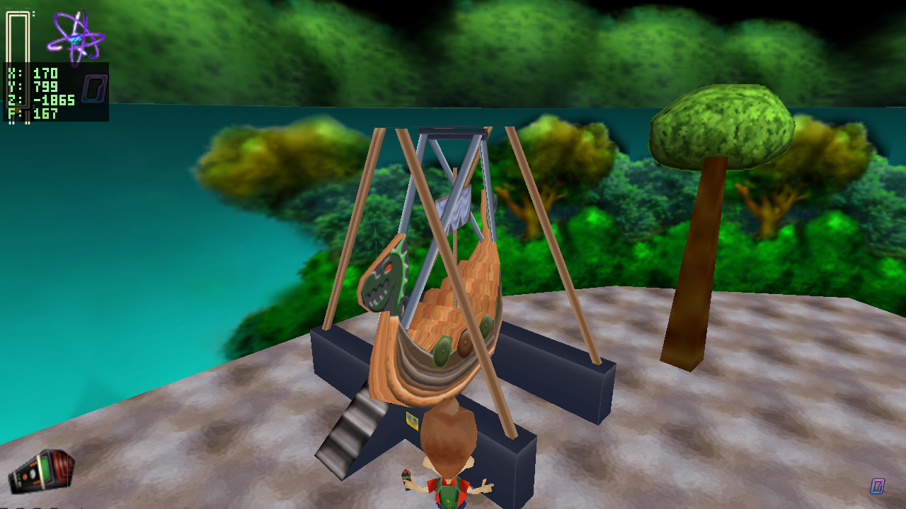
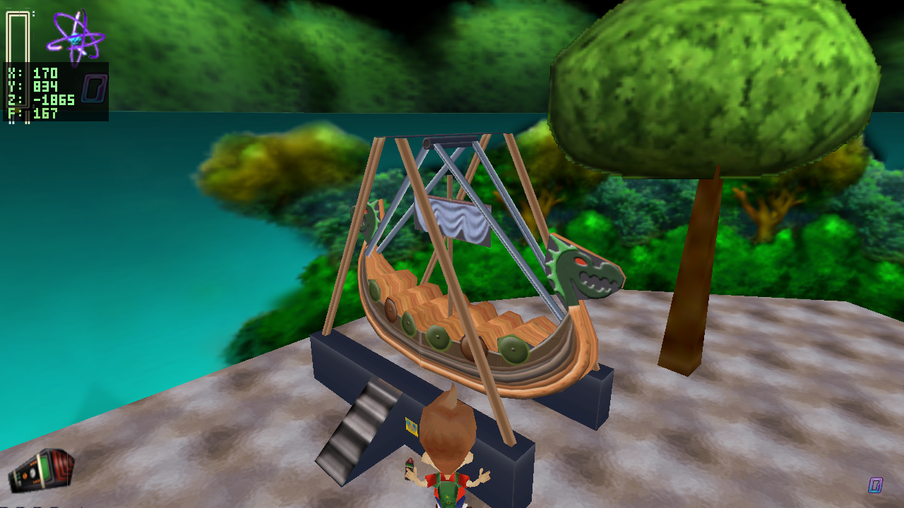
Ticket #3 found that .gam rotations are authored in degrees and fixed the magnitude — but it
derived the sign from the Z-mirror alone: a reflection flips a Y-rotation
(S·Ry(θ)·S = Ry(−θ)), so it stored ry = −θ. That is only half the conversion. The
original world is left-handed, and a left-handed rotation by +θ is the right-handed (GL)
rotation by −θ — a second negation that cancels the first on the X and Y axes, leaving a single
negation on Z. So the faithful import is rx, ry = +θ, rz = −θ.
Why did ticket #3's sign survive its own QA? Its three validation props were all sign-blind:
a toolchest at 180° (−180° ≡ +180°), a phone booth at 180°, and a fan disc that is
rotationally symmetric. The one asymmetric case (a 270° yokian door) reads "filled" from either
facing because a door panel spans its opening both ways — so the shot was retaken and looked fine.
This ticket finally supplied unambiguous arbiters: the mummy tomb is a one-sided 3D sarcophagus
(at the wrong sign it turns edge-on, baring the dark recess) and the pirate ship must hang inside a
fixed A-frame. Both lock to the authored angle only at +θ.
gam_loader.c, rx, ry = +deg·π/180 and
rz = −deg·π/180 (the mirrored axis lands the lone negation on Z). The same single change re-seats
the fowl-room door (item 6, authored 90°). The sign is uniform across every consumer (draw yaw, the
player heading sinf(ry), the camera), so it also corrects Jimmy's spawn facing once more — see
collateral below; ticket #3's "phonebooth on his left" note is superseded.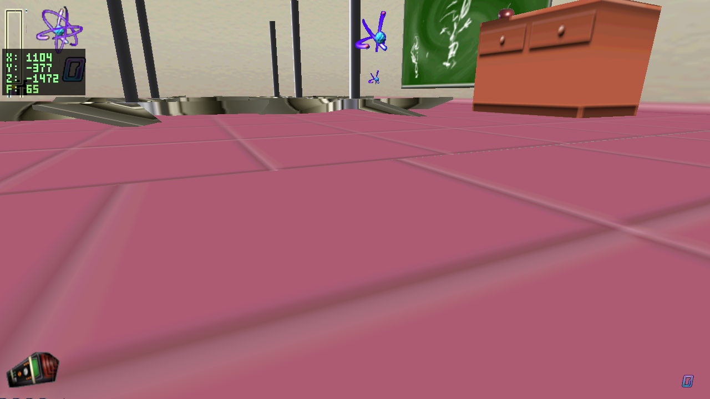
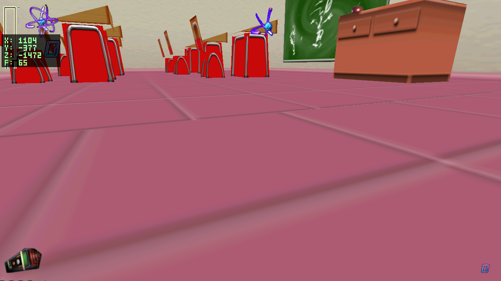
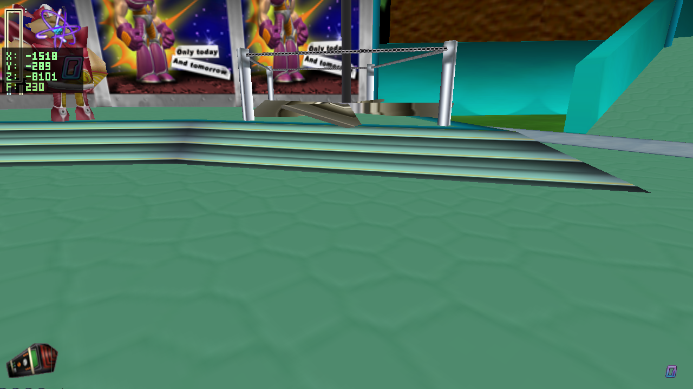
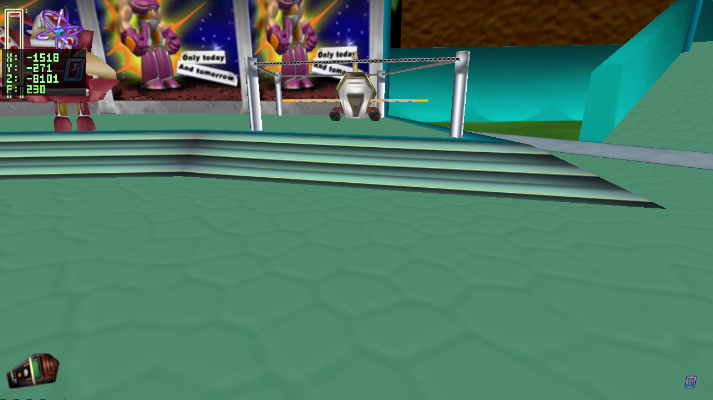
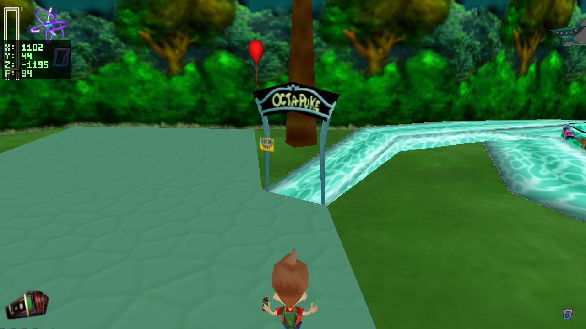
C3DOmtObj (FourCC 3OMT) authors two properties the engine had never parsed:
OmtDatabase (a container, always objects.omt in JNBG) and OmtIndex (a 3DSh shape-chunk
id). With no reader, every 3OMT instance fell through to the per-FourCC default — a faceted
Sphere01 mesh that reporters across three levels all read as "a fan." The authored indices map
cleanly onto the OMT shape table:
Level2a 3OMT bench01..06 OmtDatabase=objects.omt OmtIndex=19 -> shape "bench04" (school desk) Level3 3OMT rockship OmtDatabase=objects.omt OmtIndex=26 -> shape "rocketship" Level3D 3OMT C3DOMTOBJ OmtDatabase=objects.omt OmtIndex=21 -> shape "block" (octasign banner)
OmtDatabase/OmtIndex in gam_loader.c and add a JNBG OMT-shape
resolver tier that binds the authored chunk to its omt-gltf export. The shapes are exported with
--raw-origin (a new toolkit flag) — keeping each shape's authored origin instead of localizing to
its AABB centre — so the authored rotation pivots correctly (the same property that fixes the phone
booth, item 2). The tier is JNBG-gated: JNvsJN ships its own objects.omt with colliding indices.
This is one data-driven rule, so the dino, plant, candy-sign and Retroland gallery props it also
covers are fixed for free.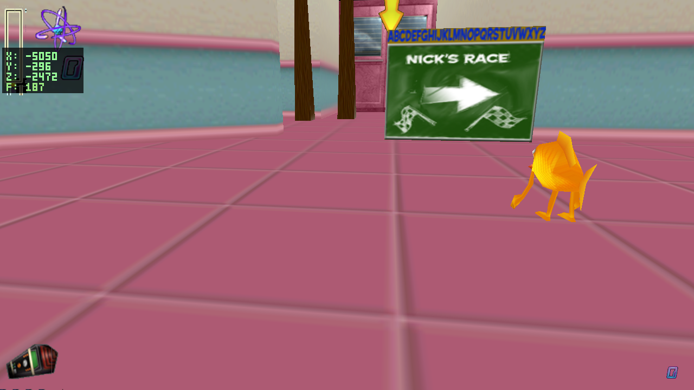
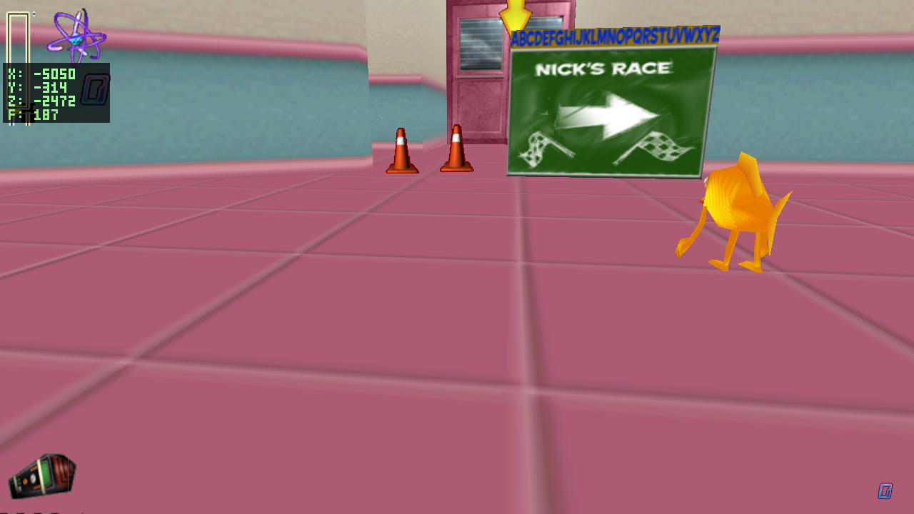
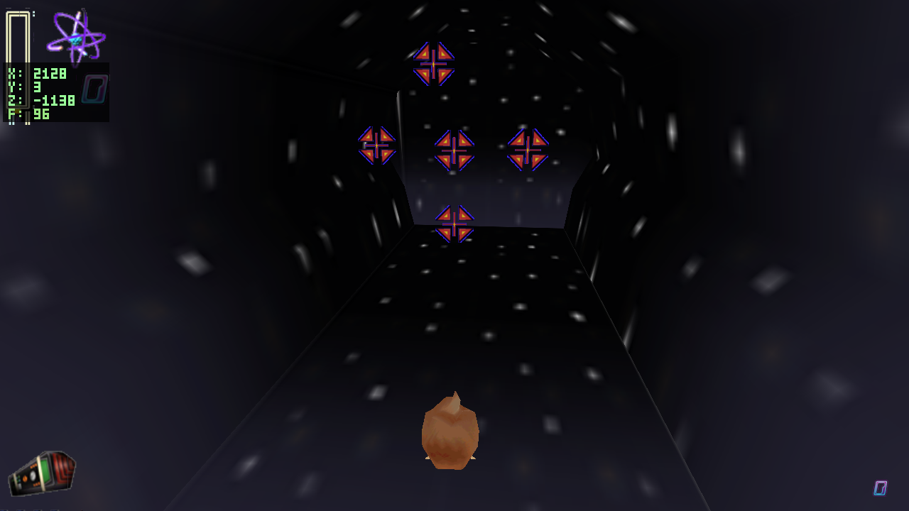
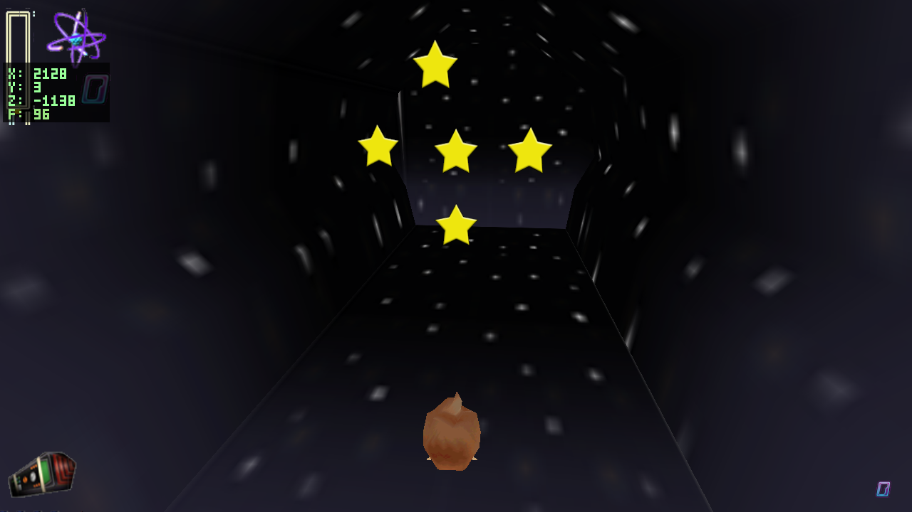
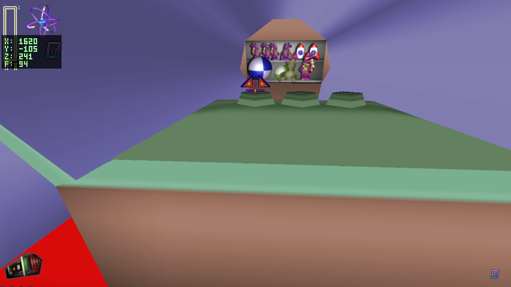
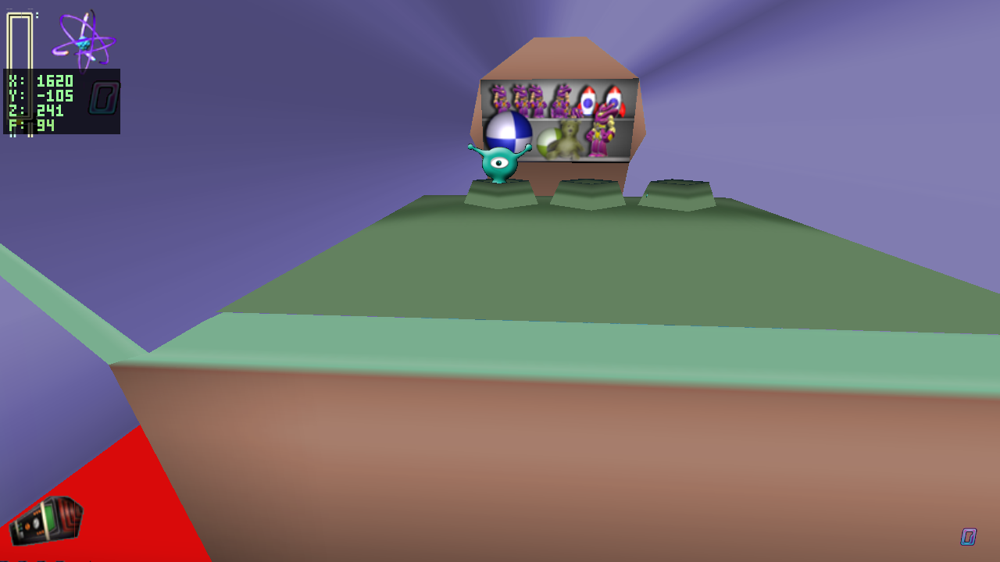
C3DTree and C3DMovingTarget are both members of the C3DSprite family — every instance
authors a SpriteDatabase=sprites.omt + SpriteIndex canvas, which is the object's visual. But
the resolver checked its per-FourCC table first, where a 3TRE → tree01.glb mesh row (a Retroville
trunk, applied to every tree including the level2a race cones) and a 3TAR → JNvsJN target sprite
shadowed the authored data. The instances knew what they were all along — they author cone (41),
shooting-stars (175) and martian (176).
3CHK exception from ticket #3 into a rule — when a JNBG
entity authors a real sprites.omt canvas, the sprite tier wins over a visible per-FourCC mesh
default. (Curated icons.omt placeholders like 3NEU/3RED and rows marked invisible keep their TYPE
rows, so nothing regresses.) Removed the stale 3TRE mesh row and 3OMT name-matched tag rows.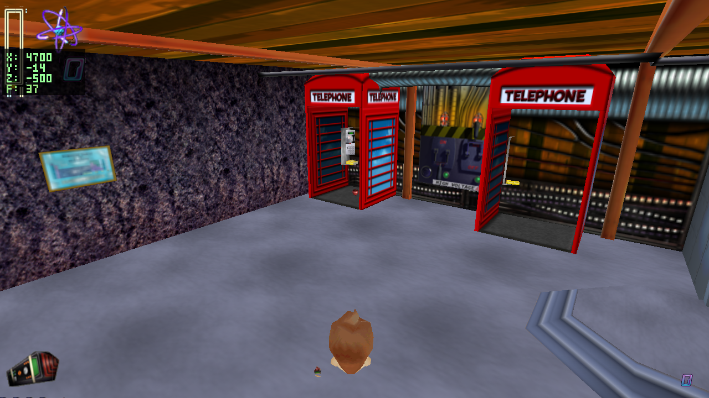
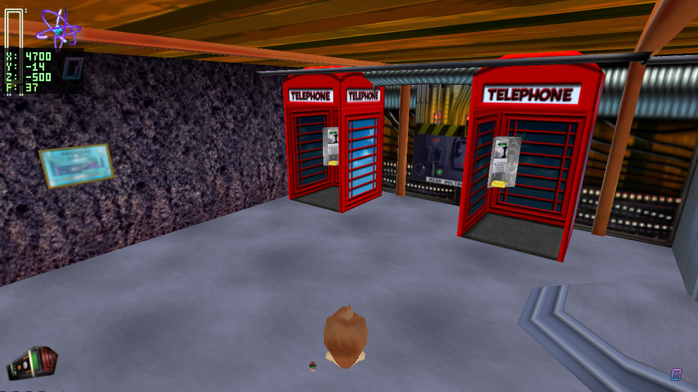
The booth was exported (ticket #3) with its geometry localized to the mesh AABB centre — correct for static placements, which the engine translates by the centre offset. But an entity mesh is rotated about its own origin. The phone shape's authored origin sits ~83 units off its AABB centre in Z, so the authored 180° rotation swung the localized booth twice that distance — straight into the wall behind it.
phone.glb with the new omt-gltf --raw-origin flag, preserving the
shape's authored origin so the 180° rotation pivots where the original pivots it. (Entity-bound OMT
shapes now all take this path — see item 7.)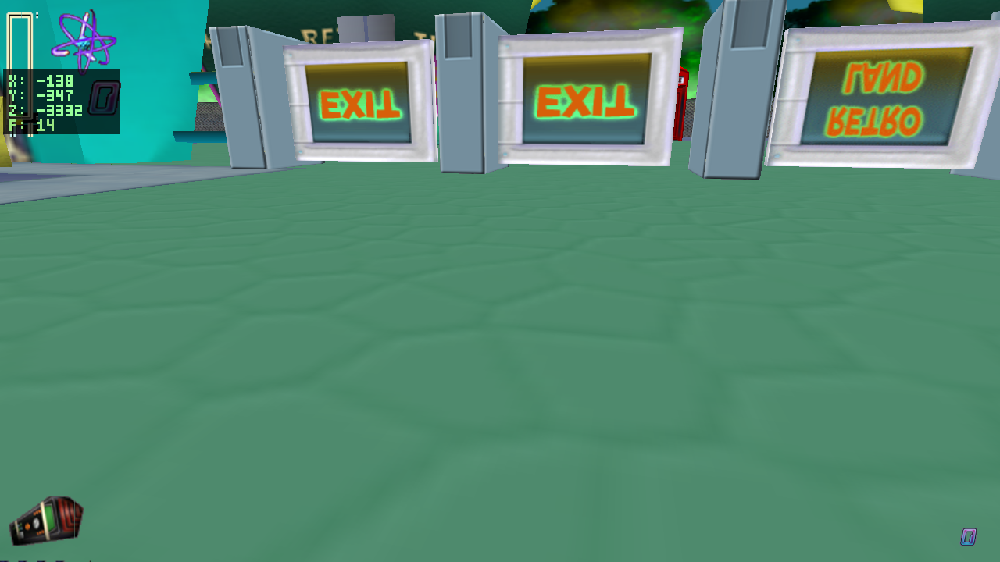
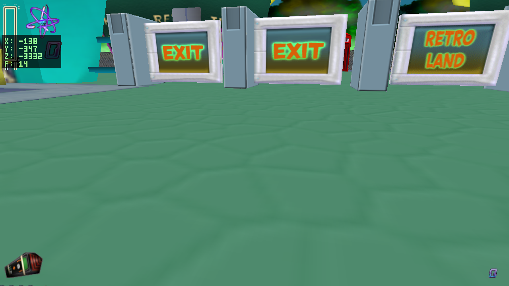
The school/swing-door classes apply a per-instance authored PNGFile to whichever mesh source
loads (ticket #3). When that source is a textured glb twin, its UVs are baked with the
DX/glTF convention (the omt-gltf 1−v flip). A standalone PNG loaded with the engine's default
(OpenGL, bottom-up) orientation then samples vertically inverted — so the doorretro lettering came out
upside down.
tex_cache_get_vflip() and use it for the authored door PNG when the door
resolves to a glb-twin mesh (separate cache key, so a path can hold both orientations). ASE-sourced
doors keep the default load. This also seats the fowl-room note (item 6) right-side up.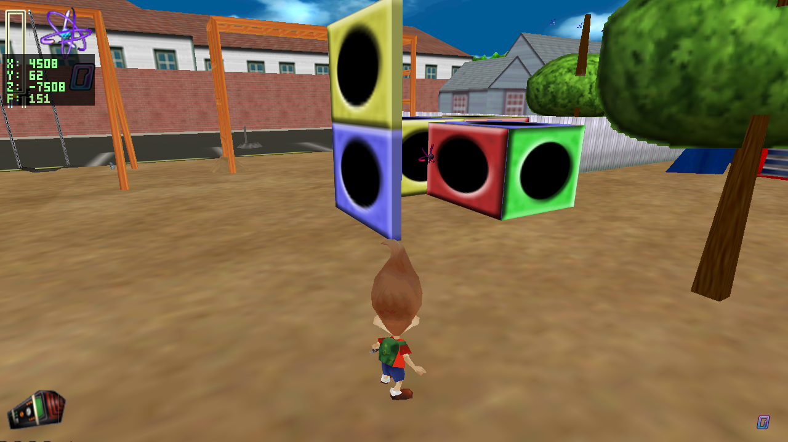
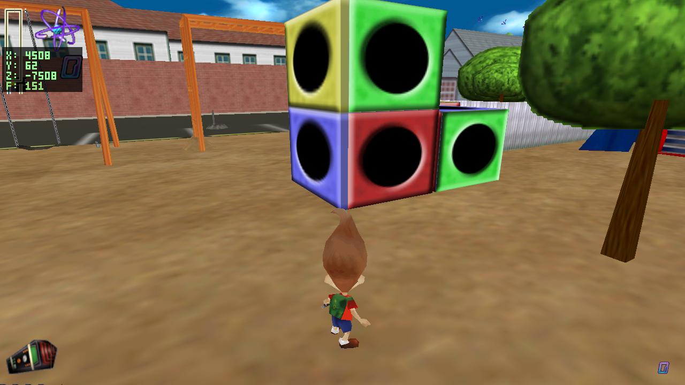
Ticket #3 made every BLOCK*-prefixed placement an invisible collider — case-insensitively, to
catch level1c's "Blocking01". That rule over-matched: level1's playground climbing toy is built from
visible meshes literally named Blocks_Out and Blocks_In. Sweeping all 35 levels confirms
those two are the only BLOCK-named meshes that carry real visible texture rather than being a bare
collider (the fence-textured BLOCK_HOODFAR shells, for instance, are level-perimeter colliders whose
visible counterpart is the chroma-keyed 2D_Trees foliage — they stay hidden).
Blocks_Out / Blocks_In from the collision skip;
everything else BLOCK* stays invisible. The faithfulness sweep encodes the same two-name exception
so the two rules can't drift.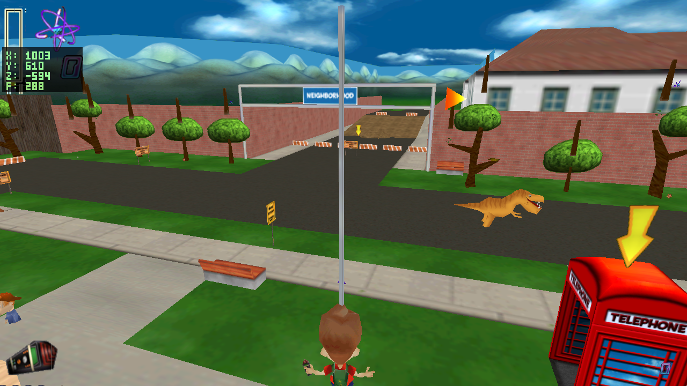
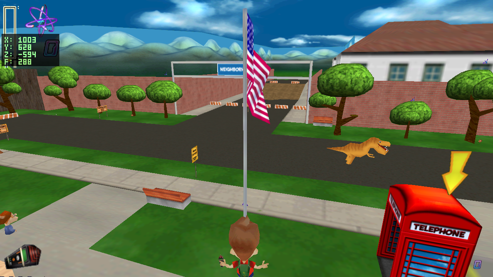
The 3FLA FourCC is registered by C3DFlag (its registrar FUN_00419550 sits inside the class's
code region per docs/_gam_classids.tsv) — the rooftop flag. The old row was a name-match to the
freeform editor tag string "C3DFIRESTRATO" and bound firestrato.ASE, whose geometry is authored
~350 units off-origin; it rendered floating away from the pole, reading as "missing."
3FLA → flag.ASE + flag.png (the American flag on its pole).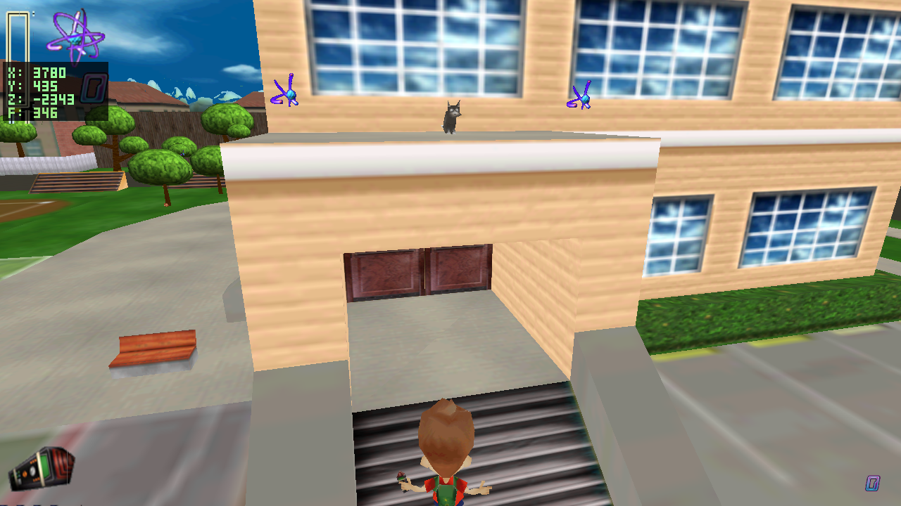
The engine hides any entity authoring InitiallyVisible=0 at boot (faithful — the original reveals
them via scripting). But C3DKitty's own per-frame update force-enables its visibility while its
task state is below the rescue threshold (10) — decomp C3DKitty.md — so the original shows the cat
from frame one despite the authored flag. The engine's generic boot-hide didn't know about the
class's override.
3KIT from the InitiallyVisible=0 boot-hide, and give the row its
class-loaded texture (cat.png; the ASE carries no usable bitmap).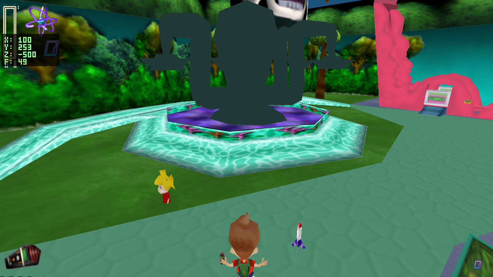
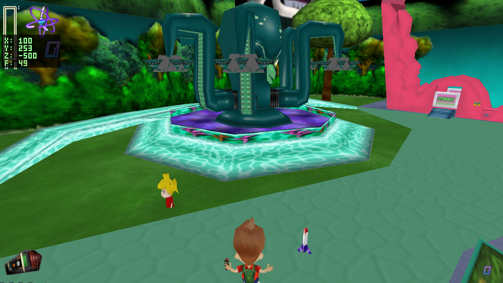
C3DOctapuke registers HIDEFAULT → octo.ase (the puke animation) and HISTOP → octostop.ase,
both textured by octapuke1.png. The engine bound octo.ASE — but that morph-anim ASE carries
zero texture UVs (the original keeps the base shape's UVs across morph frames). Drawn statically it
sampled a single dark texel and rendered as a black silhouette.
octostop.ASE (which carries the UVs) + octapuke1.png —
the same stop/idle-pose rule used for Cindy in ticket #3.qa_web_verify.py's "click sky" probe assumed the old spawn
orientation; the open-sky band moved with the corrected spawn, so the probe was re-pointed. All 16
checks pass.Ticket #3 left behind an executable invariant checker — JN_AUDIT=1 logs every draw decision and
tools/audit_faithfulness.py asserts the QA-derived rules across all 35 levels. Within one run it
flagged two regressions I'd just introduced, before any human saw the build:
BLOCK_HOODFAR perimeter shells drawing as giant fence
walls. That sent me to the data: only Blocks_Out/Blocks_In are real geometry, so the fix became the
two-name exception above.Both new rules are now encoded in the sweep, so neither regression can come back silently — exactly the "mine the rule, enforce it everywhere" loop sandmanfan asked for.